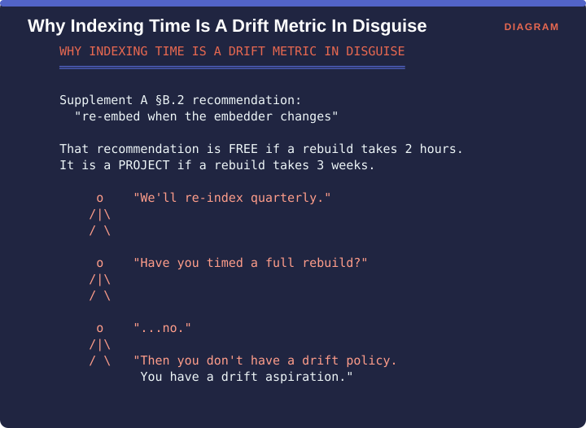

Measuring Retrieval › D.2 Index-time metrics
Source: the four metrics below are the ones identified in the Brehme, Ströhle & Breu systematic review as the standard set for database performance evaluation, being upload time, indexing time, retrieval speed and throughput (arXiv:2504.20119).
The review’s summary of current practice is itself a finding. The indexing component is evaluated primarily on performance measures such as indexing and retrieval speed, and other factors are assessed only indirectly through overall system performance. Put plainly, nobody is measuring whether your indexing choices, meaning chunk size, overlap and embedding model, are any good.
| Metric | Unit | What it tells you |
|---|---|---|
| Upload time | corpus | Ingestion pipeline throughput |
| Indexing time | corpus | Cost of a full rebuild - the number that determines whether re-embedding is feasible |
| Retrieval speed | query | Per-query latency at the vector store |
| Throughput | system | Concurrent query capacity |
| Index size | corpus | Storage cost; also a proxy for memory pressure |

Supplement A §B.2 recommends re-embedding whenever the embedder changes. That recommendation is free if a full rebuild takes two hours and it is a project if a rebuild takes three weeks, so the same sentence means two entirely different things depending on a number most teams have never measured.
The exchange in the figure is the one worth having. A team plans to re-index quarterly. Asked whether they have timed a full rebuild, they have not. In that case they do not have a drift policy, they have a drift aspiration.
Concrete evidence that architecture choice dominates here: VersionRAG requires 97% fewer tokens during indexing than GraphRAG, which the authors note is what makes it practical at large scale (arXiv:2510.08109). A thirtyfold difference in indexing cost is the difference between a system you can refresh and one you cannot.
Time a full rebuild once and write the number down. It is the single most decision-relevant efficiency number in this part and almost nobody has it, and every drift and freshness policy in Supplement A is gated on it.
Measuring Retrieval · Madhava Gaikwad · First edition, September 2026